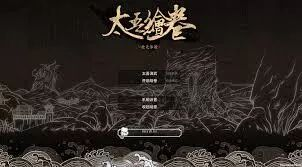
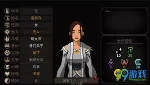
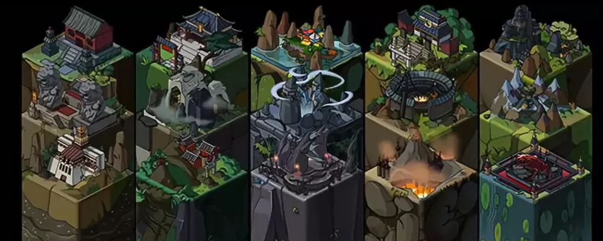
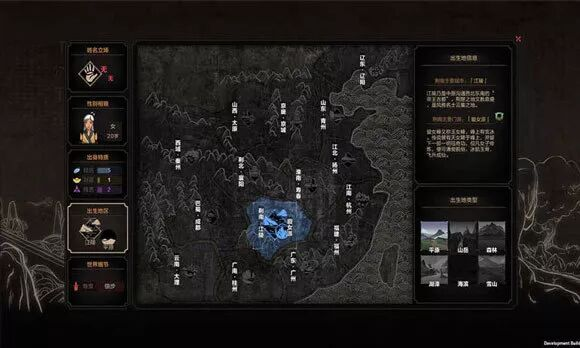
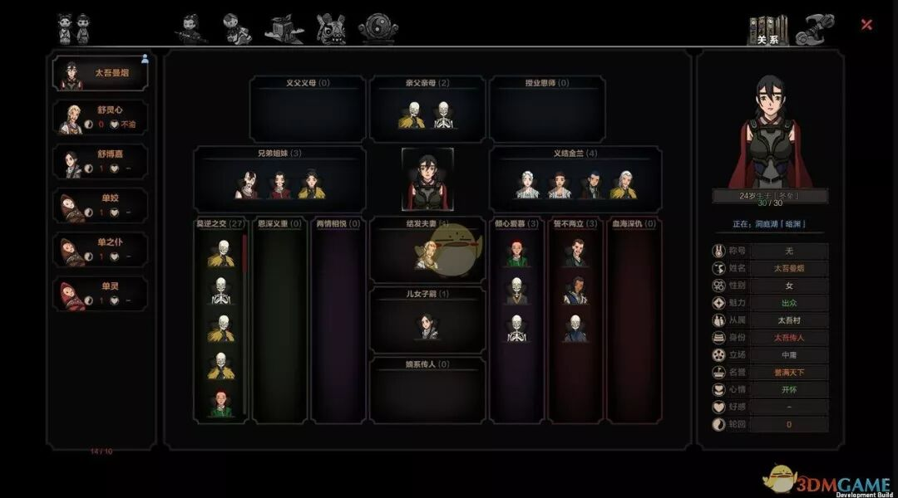
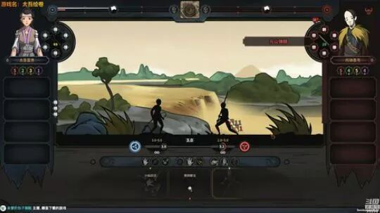

上上周介绍了《中国式家长》，也顺带提到了一下《太吾绘卷》。《太吾绘卷》真的是中国武侠游戏的希望啊！它曾经登上Steam的前十玩家在线榜单，甚至超过了GTA5的玩家人数。
故事背景
在这个世界中，你需要扮演一个”太吾氏“的传人，与一股神秘的”相枢“力量进行世世代代的战斗。然而”相枢“的力量非常的强大，因此我们的太吾传人单单依靠一个人一辈子的修炼是不够的。太吾传人会有一个伏虞剑柄，这个剑柄可以把太吾一辈子的修行传给下一代。依靠着一代又一代的功法累积，我们的太吾传人将会功法大成，最终打败强大的”相枢“。

复杂的世界设定
在这个世界中有少林，武当，五仙，铸剑等等多达十几种门派，每一种门派都会有从九品到一品的武功。越是高品的武功越是难以得到，难以学会，同时也更为强大。我们作为太吾传人，就是要想尽各种方法，学会这些门派的各种武功，最终打败”相枢“。

不过武功不能乱学。在太吾世界中，各种内力有五行的相生相克，每一个门派的内功都有他们自己的内力属性。我们需要学习一套互相融洽的内力，方能让内息顺畅，运行无阻。若是胡乱修行，则会内息紊乱，甚至走火入魔，难以救治。

在这个世界中不仅仅功法有品级，还有很多很多的道具，技艺也有等级。比如做菜也有从一品到九品的各种技艺书籍，要想做得一手好菜，一定要多多学习这些书籍。这样就算食材用得比较差，也能做出品级很高的菜肴，门派里的人也会更喜欢。
当然这个世界中每个人都喜欢的是斗促织。上到村长镇长，下至乞丐，要想跟他们搞好关系，斗一斗促织总是没错的。促织的抓捕只有在秋季才能进行。我们可以凭借促织的叫声大小，叫声频率以及音高来判断好的促织，从而实施抓捕。
多样的人物关系
虽说我们有这么多的门派，里面的NPC人物可完完全全是随机生成的哦。从名字，属性，一直到他们的功法，各种武功技艺的资质等等，都是独一无二的。不仅如此，这些NPC互相之间会有极其复杂的人际关系，你也可以跟他们形成各式各样的人际关系，甚至影响他们的人生。

在这个世界中，我们可以走正道，依靠给门派里的人们送钱，送资源，送做好的菜来打动他们，最终和他们结为好友，甚至义结金兰，成为同道中人，从而让他们教我们各种武功。我们也可以走邪道，把下一代的掌门弟子绑架起来，逼迫他入魔，然后再拯救他，成为他的恩人，从而让他教我们各种武功。我们还可以干脆直接种田赚钱，跟商人搞好关系，用高价从他们那边买到各种武功秘籍。总之方法多种多样。

总之这款游戏真的很良心，而且是一款有魔力的游戏。入门20个小时起真的不是随便说说的。要是不准备这么肝的话，推荐去看一下王老菊的视频，可以迅速体验这款游戏的乐趣https://www.bilibili.com/video/av32207757。